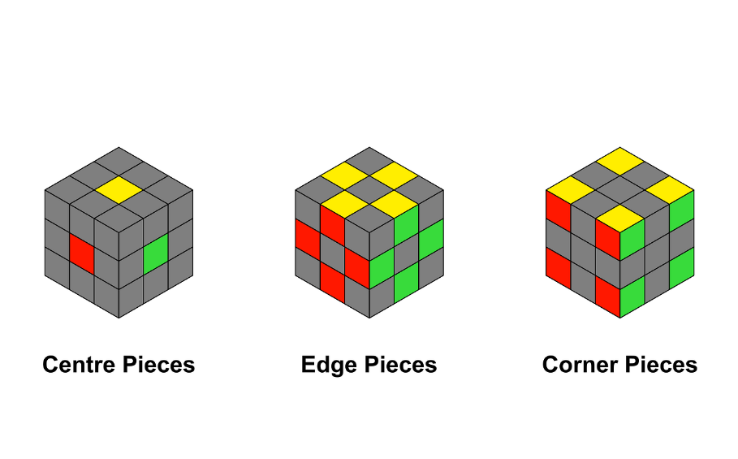
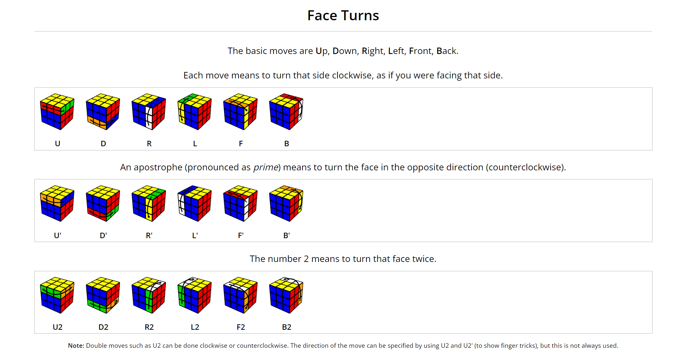
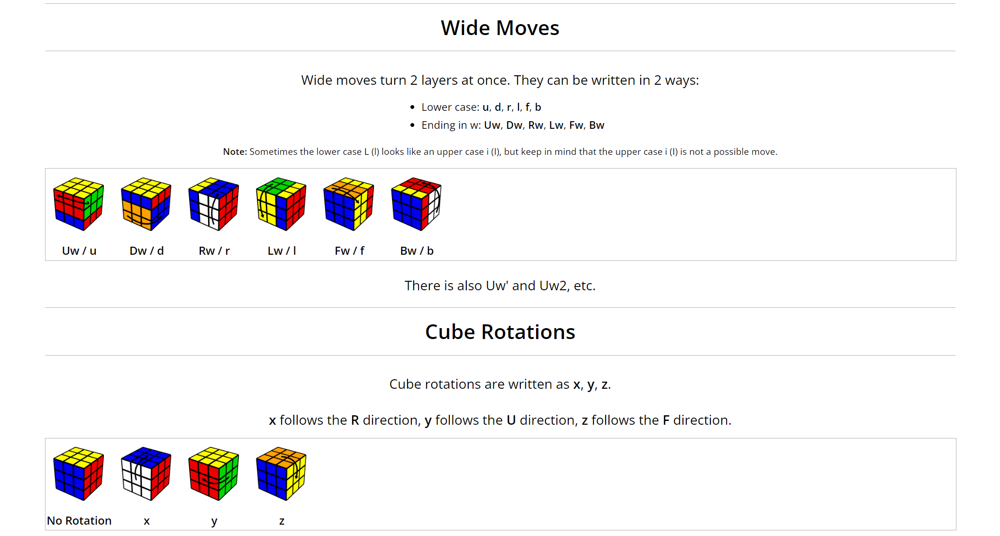
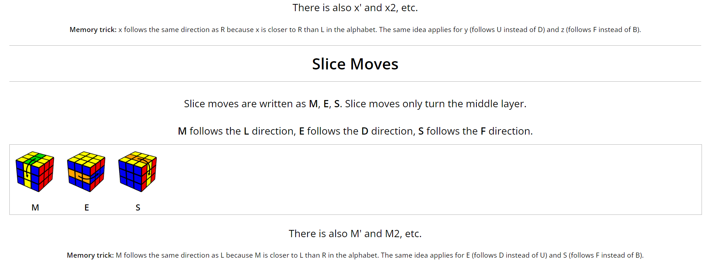
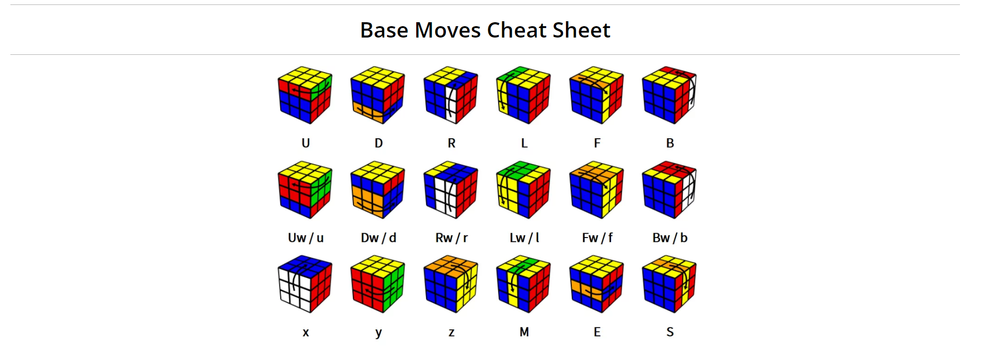
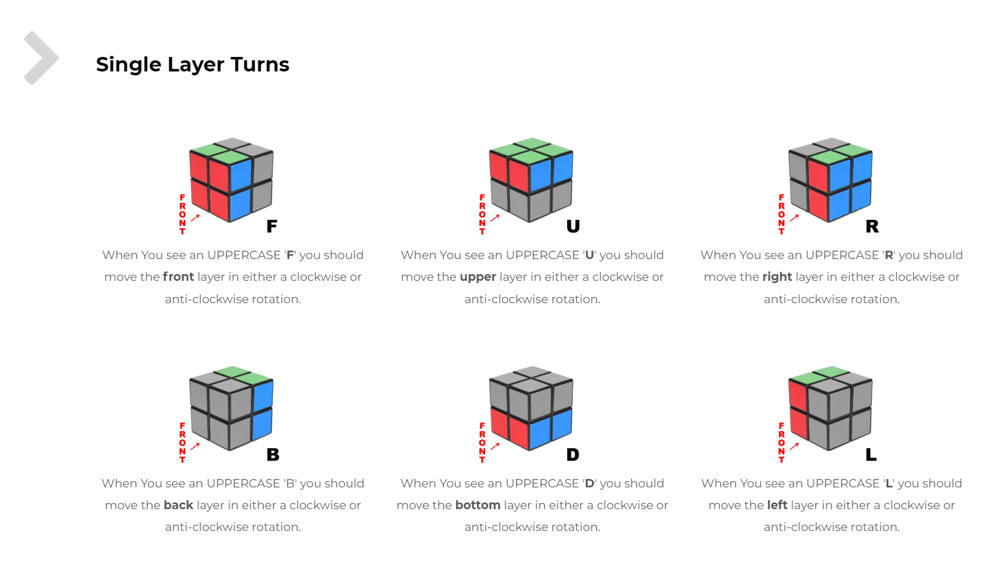
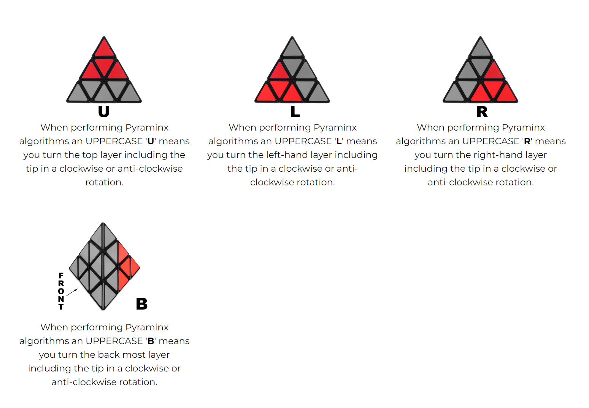
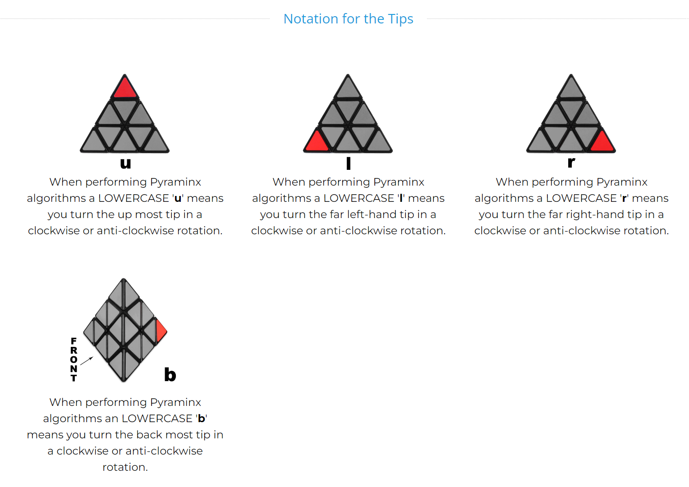
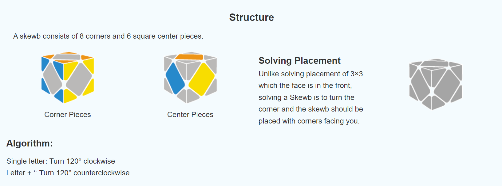
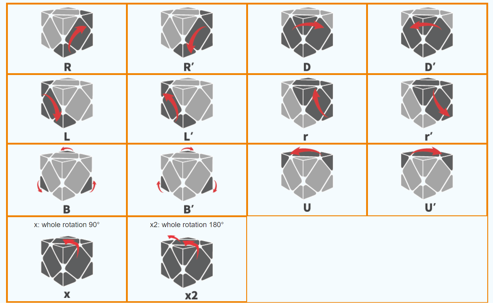

Img source- McCormick, Joe. “How I Learned to Solve the Rubik’s Cube in 30 Seconds.” The Startup, 27 Jan. 2022, medium.com/swlh/how-i-learned-to-solve-the-rubiks-cube-in-30-seconds-afff9292b030. Accessed 10 Aug. 2023.There are a total of 6 basic cube notations for the 2x2 as well as the 3x3 rubix cube. They are:
➡️Same moves counter-clockwised also have the same notations with an additional prime/appostrophy (') symbol.
➡️Same moves rotated 2 times also have the same notations with an additional symbol of 2 in front of the letter.
Refer to the image source given below for a better understanding of the notations:
    Img sources- Jperm.net, 2021, jperm.net/3x3/moves.
Img source-“2x2 Notation Guide | Guides & Speedcubing Tutorials.” KewbzUK, kewbz.co.uk/pages/2x2-notation-guide. Accessed 10 Aug. 2023.

Img source- “Learn How to Solve a Pyraminx - Beginners Notations Guide.” KewbzUK, kewbz.co.uk/blogs/notations/beginners-pyraminx-notation-guide. Accessed 10 Aug. 2023.

Img source-“GANCUBE Tutorials - Skewb - GANCube.” Www.gancube.com, www.gancube.com/gancube-tutorials-skewb/. Accessed 10 Aug. 2023.Click the link for my video to get a visual insight on Notations for 2x2 and the 3x3 on YouTube! 👉 Cube Notations for the 2x2 and 3x3 rubix cube!!
Click the link for my video to get a visual insight on Notations for the Pyraminx cube on YouTube! 👉 Cube Notations for the Pyraminx rubix cube!!
Click the link for my video to get a visual insight on Notations for the Skewb cube on YouTube! 👉 Cube Notations for the Skewb cube!!